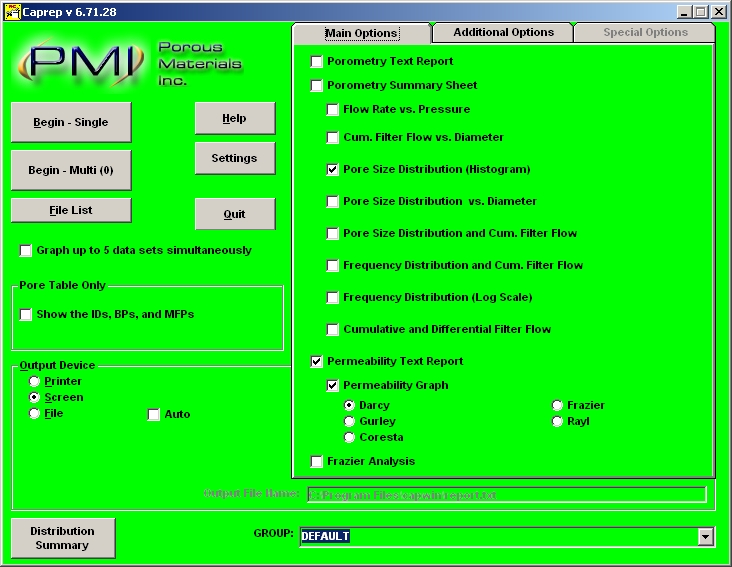

Before a report or graph can be printed, you must use the above screen to select the options to be displayed. These options allow you to select only those reports and/or graphs that need to be printed. This saves time because Caprep will only perform the calculations necessary for the selected reports and graphs.
| Back | Next |